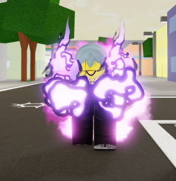

Mahito/perfection
Por: João lucas
Em Jujutsu Shenanigans, o Mahito é uma poderosa adição ao elenco, famoso por sua habilidade de transfiguração. Sua mecânica de ultimate transforma-o em sua forma "Perfeição" (Corpo Espiritual Instantâneo da Morte Distorcida), liberando interações secretas que invocam um exército de humanos transfiguradosStock Pile / Soul Fire: Permite armazenar e disparar projéteis de alma, podendo causar dano direto ou gerar variantes de lacaios.Focus Strike: Um ataque de golpe concentrado, excelente para punições e para iniciar combos. Body Repel / Projeções: Habilidades defensivas e ofensivas que utilizam sua própria carne/alma para repelir inimigos ou desferir golpes pesados de curto alcance.
Ryu/True cannon
Ryu Ishigori é um lutador que se destaca pela sua alta produção de energia amaldiçoada e ataques à distância. Ele possui um combo básico de socos (M1)que finaliza com um laser e conta com sete habilidades, incluindo uma poderosa expansão de domínio e acesso a golpes aéreos M1s (Ataques Básicos): Como você mencionou, esta era a única parte certa. Ele tem apenas 3 socos na sequência, e o terceiro solta um disparo laser de energia amaldiçoada com o topete.1. Granite Blast: O clássico feixe de energia concentrada. Ele dispara em linha reta, pode ser usado no ar (com mira livre em 360°) e causa atordoamento.
Se você segurar o botão, o golpe carrega por cerca de 1 segundo, dobrando o dano, quebrando blocos e atravessando oponentes. 2.Appetizer: Um contra-ataque (Counter) rápido. Ao ser atingido com ele ativo, Ryu esquiva do golpe e contra-ataca o inimigo. 3. Second Helping: Ryu mira no cursor e salta em direção ao oponente (ganhando imunidade a golpes físicos durante o avanço) para desferir um pisão/impacto pesado de cima para baixo que joga o inimigo para o alto.
4. Unsatisfied: Uma sequência de socos pesados e brutais de curto alcance que finaliza arremessando o adversário para longe.Especial (R): Ryu ajeita o topete com um pente. No moveset base do jogo atual, essa ação serve como provocação ou para redefinir animações.